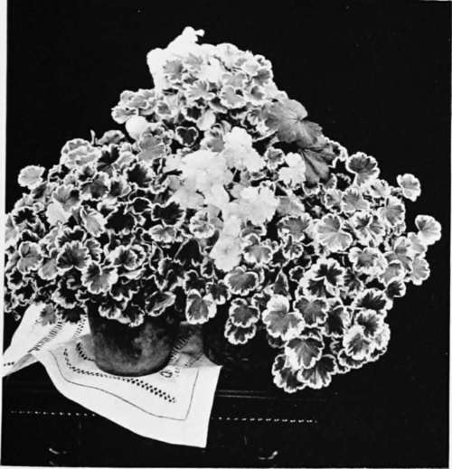

XXIII. The Geranium
Description
This section is from the book "Indoor Gardening", by Eben E. Rexford. Also available from Amazon: Indoor Gardening.
XXIII. The Geranium
WE are told that the Geranium is becoming so "common" that many who like to be exclusive in all matters pertaining to themselves, do not care to grow it. I am glad of this, because the plant is too good a one to waste its attractions on such a desert air. -It should only be grown by those who have a just appreciation of its merits. Those who like beauty for beauty's sake, and not because some snobbish person condescends to set the seal of his or her approval on it, will never turn the cold shoulder toward the Geranium. The criticism that it is "common" is a compliment to it, for it means that it is so accommodating in its habits that it adapts itself to widely varying conditions, and will do as well for the amateur as for the professional, that it flourishes as finely in the humble home as in the dwellings of the rich, and makes itself a blessing where the flowers of the aristocrat would languish and die-in brief, that it is everybody's flower. The more such "common" flowers we have the better. A well-grown specimen of a fine variety-and we have so many superior kinds nowadays that no one is excusable in growing an inferior variety-is equal to the task of making the window a thing of beauty from December to May, and this with very little trouble on the part of the grower. Simply give it a soil of loam, with some sand mixed in, a moderate amount of water, plenty of sunshine, and freedom from frost, and it will ask but little else at your hands. Insects seldom trouble it. Diseases rarely attack it. It is, in short, an ideal plant for the amateur.
The old type of Geranium had narrow petals, and its individual flowers were consequently not very attractive. The cluster was depended on for show, rather than the single flower. But the florists took the plant in hand, and they have worked wonders with it. We now have varieties with flowers nearly two inches across, and petals so wide that they overlap each other, like those of the Pansy, thus giving us a blossom that is far more showy in itself than the old-time cluster, made up of many small flowers, ever was. And as for color, nothing in all the plant-world excels it. Such intense scarlets, such rich crimsons, such glowing vermilions, such pure pinks and delicate salmons are found in no other flower. Which is finest is simply a matter of taste.
Madam Salleroi Greanium.
A large plant-and the Geranium can be grown to considerable size-in perfect health, and full of bloom, is a sight to gladden the eye of the flower-lover. If it has been properly trained, it will have many branches, and there will be flowers on every branch, with buds showing between the new leaves unfolding at the branch's extremity. To secure such a plant one must begin to train it while it is young. As soon as it has made three or four inches of growth, nip off the top of it. This will cause branches to start along the stalk. Let these grow to be three or four inches long, and then give them a nipping. By keeping up this treatment you secure a plant that is bushy and compact-never "leggy" and awkward, like the average Geranium that has been allowed to grow without any attention. Let a plant train itself and it will generally go up, up, up, in one long stalk, having but few flowers. It could not be expected to have many, as it is the habit of this plant to bloom only on its new growth; therefore there will be but one truss of bloom to a branch at a time, and the plant that has few branches is limited in its capacity for flower-production. The necessity for keeping up branch-production until the foundation of a good flowering plant is formed will therefore be readily understood.
The owner of a Geranium ought not to lose sight of the fact that proper training should be given while the plant is developing. You cannot take it in hand, after it has been growing for a year or more to suit itself, and make a satisfactory plant of it. With many other plants this can be done, but the Geranium is not tractable enough for that. It must be trained as it goes along.
The idea seems to prevail extensively that only young plants are desirable for winter flowering. Such is not the case. Young plants are good, as far as they go, but-they don't go far enough. In other words, they haven't enough branches to give the effect this plant is capable of when at its best. Plants two, three, and four years old are far superior to young ones for winter use. This is because of their many branches, which means greater flowering capacity. An old plant will have all the vigor of a young one if fed well. You can cut it back, in spring, leaving nothing but a skeleton, and by fall it will have sent out scores of branches, and completely renewed itself. Never throw aside your old plants for young ones until they have become too large for your windows.
We have double Geraniums and single ones. Personally I prefer the single sorts, because of the beauty of the individual flowers. Among the doubles individuality is largely lost sight of in the crowded condition of the truss.
Where there are so many superb varieties to choose from the amateur will find it difficult to make a selection. I will give a list of some of the most distinct sorts:
Granville
Rose-pink. Large, fine flower. The best of its class.
Wm. Cullen Bryant
Rich scarlet. Very large, circular flower. Extra fine.
Athlete
Vermilion. A grand variety.
Mary Hallock Foote
Large white flower, suffused with salmon rose. Exquisite.
Apple Blossom
Pale, delicate pink. A lovely variety.
Mrs. E. G. Hill. Rosy salmon, large and fine.
The above are all single kinds. Among the best double varieties I would name:
S. A. Nutt
Rich, dark crimson. Very free bloomer.
Banquise
Pure white.
J Amaique
Crimson-cerise.
I want to say a good word for two old favorites of the family, now greatly neglected. These are the Rose and Skeleton Leaved varieties. They are so delightfully fragrant that everyone having a collection of window-plants ought to grow them. A few of their leaves add a charm to flowers that are lacking in fragrance. Because of their beauty as well as fragrance they are excellent in making up corsage and button-hole bouquets. The odor of the Rose is pleasantest, but the Skeleton Leaf has the most beautiful foliage. Both varieties are of the easiest culture. They can easily be grown from cuttings, as can all Geraniums. Put them in the sand-box, as advised in the chapter on the Propagation of Plants, and not one cutting out of fifty will fail to grow.
Flowering Geraniums do best when kept in pots of moderate size, but those grown for their foliage should be given more root-room.
These can be trained into miniature trees with but little trouble.
Geraniums that have bloomed throughout the winter, and are intended for use another season, should not be allowed to blossom in summer. Let them rest from May to November. Cut them back sharply, to encourage the development of new, strong branches, and nip out every bud as soon as you discover it.
I would advise the liberal use of the Madame Salleroi Geranium in all window-collections. This variety has a great profusion of green and white foliage, and grows in rounded, compact shape without any training whatever. It forms plants twelve to fifteen inches across, and not more than eight or nine inches high, with such quantities of foliage that the pot containing it is literally hidden. Not a branch can be seen-simply a mass of lovely foliage quite as attractive in its variegation as many flowers are. These plants will be found extremely useful for all kinds of decorative work. In spring they can be broken apart, each bit of branch making a good cutting, and used to make a border for beds in the garden. Set the cuttings in the ground where they are to grow during the summer, about eight inches apart.
In six weeks' time they will have grown together, forming a row of beautiful foliage which will harmonize with any plant you choose to use with it. I consider it our very best border or edging plant. This because of its beauty, the ease with which it can be grown and its symmetrical habit.
Continue to: